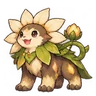
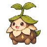
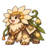

No.060
フクモリ
芽 進化形
甲羅の小さな果樹園には季節の実がなる。歩いた場所に若い木の輪が残る。
基本データ
| 図鑑番号 | No.060 |
|---|---|
| タイプ | 芽タイプ |
| 進化 | Lv.32でサイカジュに進化 |
| 入手方法 | アストラム市街（Lv.37〜40）、晶洞の奥院（Lv.66〜69）、玻璃の工房街（Lv.76〜79）の草むらに出現。 |
Lv.50の能力値
| 体力 | 291 | |
|---|---|---|
| 物理攻撃 | 169 | |
| 物理防御 | 120 | |
| 特殊攻撃 | 167 | |
| 特殊防御 | 123 | |
| 素早さ | 124 | |
| 命中 | 103 | |
| 回避 | 99 |
冒険中の能力値はレベルに応じて上がります。オンライン対戦の通常レンタルはLv.50で統一されます。
覚える技
| 技 | タイプ | 分類 | 威力 | 命中 | PP | 効果 |
|---|---|---|---|---|---|---|
| 梢の合唱 | 芽 | 特殊 | 32 | 98 | 20 | 枝葉の音を重ねて相手を包む。 |
| 若葉の握手 | 芽 | 特殊 | 25 | 100 | 30 | 与えたダメージの25%を分けてもらう。 |
| 風切りの縫線 | 風 | 物理 | 27 | 100 | 20 | 風の細い縫い目で守りの構えを貫く。 |
| 木漏れの午睡 | 芽 | 回復 | — | — | 10 | 木漏れ日の中で体力を回復する。 PPを1消費する。 |
進化の系譜

タネマルLv.16 ▶- フクモリLv.32 ▶

サイカジュ
タイプ相性
芽タイプの技は潮タイプに強く（1.5倍）、灯タイプの技を受けると効果が大きくなります。同じタイプの技を使うと威力が1.15倍になります。